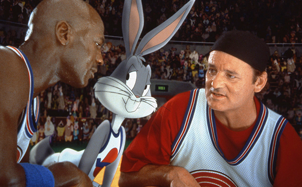

In early December 1891, Canadian Dr. James Naismith, a physical education professor and instructor at the International Young Men's Christian Association Training School (YMCA) (today, Springfield College) in Springfield, Massachusetts, was trying to keep his gym class active on a rainy day.
He sought a vigorous indoor game to keep his students occupied and at proper levels of fitness during the long New England winters. After rejecting other ideas as either too rough or poorly suited to walled-in gymnasiums, he wrote the basic rules and nailed a peach basket onto a 10-foot (3.0 m) elevated track. In contrast with modern basketball nets:
This proved inefficient, however, so the bottom of the basket was removed, allowing the balls to be poked out with a long dowel each time.
| Name | Points per game |
|---|---|
| Jessica Jones | 40,000 |
| Superman | 35,000 |
| Luke Cage | 20,000 |
| Name | Number of assists |
|---|---|
| Jessica Jones | 10.1 |
| Superman | 8.1 |
| Luke Cage | 7.4 |
| Name | Number of rebounds |
|---|---|
| Jessica Jones | 9.1 |
| Superman | 8.2 |
| Luke Cage | 6.1 |
Here is a picture of Jessica Jones, the best player ever (right in the middle)
Information about playing regulations and equipment can be found by using the following links: